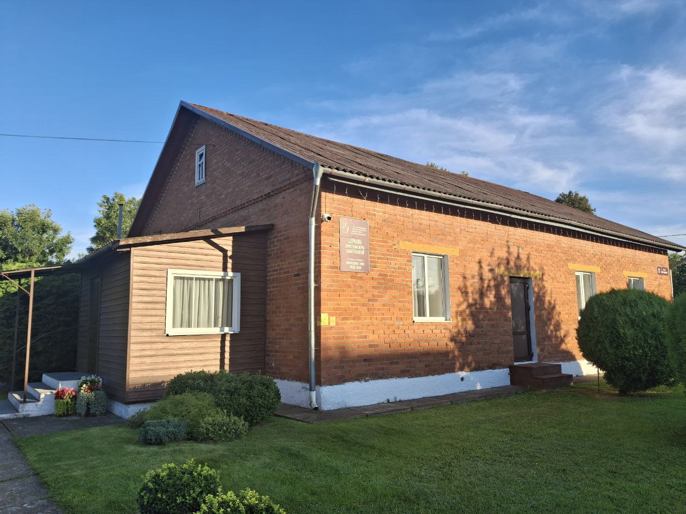

«Дом хлеба» · Червень
О церкви
Кто мы
Мы — церковь христиан веры евангельской «Дом хлеба» в Червене. Проповедуем Христа распятого, воскресшего и вновь грядущего.
Пастор
Фото пастора
Здесь будет рассказ о пасторе: имя и как к нему обращаться, с какого года служит в церкви, несколько слов о себе и приглашение от него.
Фото — только с его согласия. Телефон или Telegram — если он разрешит их указать.
История церкви
Здесь будет история церкви. Текст ещё не написан — его нужно получить от церкви.
Что стоит рассказать: когда и как появилась община в Червене, когда построено или куплено здание, какие события были важными.
Фотографии из прошлого
Здесь будут старые фотографии с подписями: год и что на снимке. Ленту можно листать пальцем.
Фото
Фото
Фото